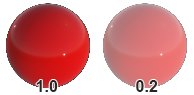
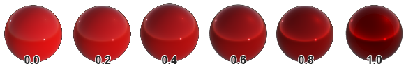

Built-in Effects
In this section are described the effects included in Evergine.Core package
Standard Effect
| Property |
Description |
| Lighting enabled |
Indicates that the material interacts with the lights of the scene. In the following image the left material has disabled ligth and the right material has it enabled
 |
| IBL enabled |
Indicates that the material reflects the enviroment of the scene. In the following image the left material has disabled it while the right material has it enabled
 |
| Base Color |
Indicates the surface color. |
| Alpha |
Indicates the transparent of the surface. Note. This parameter requires set the LayerDescription property to Alpha or a layer with blend mode enable
 |
| Vertex Color |
Indicates the surface color will be read from vertex data of the mesh. |
| Base Color Texture |
Albedo texture to define the color of the surface. |
| Base Color Sampler |
Albedo texture sampler used by Base Color Texture. |
| UVOffsets 0 |
Texcoord UV offset added to the vertex texcoord data of the mesh. Note. You can create interesting material effect only animating this parameter. |
| Metallic |
Indicates how "metal-like" the surface is. Its value is between [0-1]. In the following image you can see the result with different values.
 |
| Roughness |
Defines the smoothness or roughness of the surface. The value is between 0.0 and 1.0
 |
| Reflectance |
Fresnel reflectance at normal incidence for dieletrice surface. This replaces an explicit index of refraction.
 |
| Reference Alpha |
Threshold alpha value. |
| Alpha Cutout |
Discard pixels when alpha value is less than the specified value. |
| AllowInstancing |
Indicates whether this material allows instancing draw. |
| OrderBias |
This value is used to modify the rendering order of the meshes |
| LayerDescription |
Defines the RenderLayer used by the material. |
| Property |
Description |
| MetalRoughness Texture |
This texture allows to define multiples roughness and metallic values to the surface area instead a constant roughness/metallic value for all surface. Note. the Metallic value is (blue channel) and Roughness is (green channel). |
| MetalRoughness Sampler |
Sampler used by the MetalRoughness texture. |
Normal
| Property |
Description |
| Normal Texture |
This texture allows to simulate more details without using more polygons. |
| Normal Smapler |
Sampler used by the Normal texture. |
Ambient occlusion
| Property |
Description |
| Occlusion Texture |
Defines how much of the ambient light is accessible to a surface point. It is a per-pixel shadowing factor between 0.0 and 1.0. |
| Occlusion Sampler |
Sampler used by the Occlusion Texture. |
Emissive
| Property |
Description |
| EmissiveColor |
Additional diffuse color to simulate emissive surfaces (such as neons, etc.) This parameter is mostly useful in an HDR pipeline with a bloom pass. |
| Emissive Compensation |
The exposure compensation value of the emissive property can be used to force the emissive color to be brighter (positive values) or darker (negative values) than the current exposure. |
| Emissive Texture |
Additional diffuse albedo to simulate emissive surfaces (such as neons, etc.) This parameter is mostly useful in an HDR pipeline with a bloom postprocessing effect. |
| Emissive Sampler |
Sampler used by the Emissive texture. |
Clear Coat
| Property |
Description |
| ClearCoat |
Strength of the clear coat layer. Scalar between 0 and 1 |
| ClearCoat Roughness |
Perceived smoothness or roughness of the clear coat layer. Scalar between 0 and 1. |
| ClearCoat Normal Texture |
Normal map texture that affects to the clear coat layer. |
| ClearCoat Normal Sampler |
Sampler used by the Clear Coat Normal texture. |
Dual Texture
| Property |
Description |
| Dual Texture Blend |
Blend mode between Base Color and 2nd Base Color. Availables values: Lightmap, Multiplicative, Additive, Mask. |
| UV Offsets 1 |
UV Coord offset apply to the 2nd UV coords on the vertex format. |
| 2nd Base Color Texture |
Texture used with the 2nd UV coords set on the vertex format. |
| 2nd Base Color Sampler |
Sampler used by the 2nd Base Color texture |
Distortion Effect
This effect requires to use Distortion effect inside of Default postprocessing effect)
| Property |
Description |
| RenderLayer |
Defines the RenderLayer used by the material. |
| Intensity |
Define the intensity of the distortion. |
| Distortion Texture |
The texture used with the distortion |
| Sampler |
Sampler used by the Distortion texture. |